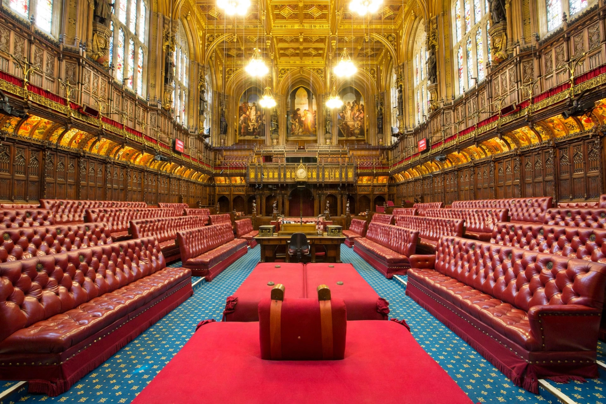

The Lord Chancellor, formally the Lord High Chancellor of Great Britain, is a senior cabinet minister of the United Kingdom and keeper of the Great Seal of the Realm. For centuries the office combined executive, legislative and judicial functions — the Lord Chancellor was head of the judiciary, presiding officer of the House of Lords, and a cabinet minister — a unique fusion of roles substantially reformed by the Constitutional Reform Act 2005.

The Woolsack in the chamber of the House of Lords, London.
The chancellorship descends from the chaplains and secretaries of Anglo-Saxon and Norman kings. Famous holders include Thomas Becket, Thomas Wolsey, Thomas More, and Francis Bacon. Because the Lord Chancellor presided over the Court of Chancery, he became the source of equity jurisprudence, mitigating the rigidity of the common law. Until the 19th century the office was usually held by a bishop or peer; it later became customary for holders to be senior lawyers.
Since 2007 the office has been combined with that of Secretary of State for Justice, heading the Ministry of Justice, which oversees courts, prisons and probation in England and Wales. Following the 2005 Act, the Lord Chancellor no longer sits as a judge nor presides over the House of Lords, but retains a statutory duty to uphold the rule of law and judicial independence, and continues to play a role in certain judicial appointments and ecclesiastical patronage.
Ministry of Justice publications; legal and constitutional histories of the office.